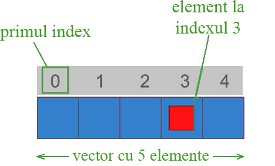

Un vector (denumit și tablou unidimensional) este o serie de elemente de același tip unde fiecare element este asociat cu un index, ce reprezintă locația acestuia în seria de elemente.
Vectorii sunt utili în special în cazurile în care aveți o mulțime de valori diferite ce sunt legate una de cealaltă sau trebuie să efectuați anumite sarcini pe anumite valori în funcție de anumite condiții.
Asta înseamnă că, de exemplu, cinci valori de tip int pot fi declarate ca un vector fără a fi nevoie să se declare 5 variabile diferite (fiecare cu propria denumire). În schimb, utilizând un vector, cele cinci valori int sunt stocate în locații de memorie alaturate și toate cele cinci pot fi accesate utilizând aceași denumire, cu indexul adecvat.
De exemplu, un vector care conține 5 elemente, valori întregi de tip int ar putea fi reprezentată ca:
În C++, primul element dintr-un vector este întotdeauna numerotat cu zero (nu unu), indiferent de lungimea sa.
Ca o variabilă obișnuită, un vector trebuie declarat înainte de a fi utilizat. Declararea unui vector denumit exempluVector cu 5 elemente de tip int în C ++ este:
int exempluVector [5];
Valorile elementelor de tip numeric ale unui vector sunt inițializate cu 0 dacă nu se specifică o inițializare explicită.
Elementele dintr-un vector pot fi inițializate explicit la valori specifice atunci când este declarat vectorul, prin includerea acelor valori inițiale în acolade {}. De exemplu:
int numereLoto [6] = { 16, 2, 12, 40, 33, 29 };
Atunci când exista o inițializare a valorilor pentru un vector, C++ permite posibilitatea de a lăsa parantezele pătrate goale []. În acest caz, compilatorul va presupune automat o dimensiune pentru vector care corespunde numărului de valori incluse între acolade {}:
int numereLoto [] = { 16, 2, 12, 40, 33, 29 };
Acesarea unei valori dint-un vector se face specificând indexul acesteia între paranteze pătrate.
int numereLoto [6] = { 16, 2, 12, 40, 33, 29 };
cout<< numereLoto[2]; // afiseaza 12, elementul al 3-lea din vector
//deoarece cum am spus numerotarea elementelor unui vector incepe cu 0
Parcurgerea unui vector se face folosind structura repetitiva for:
int numereLoto [6] = { 16, 2, 12, 40, 33, 29 };
int index;
for(index = 0 ; index < 6; i++){
cout<< "Elemetnul de pe pozitia "<< index <<" are valoarea" << numereLoto[index] << endl;
}